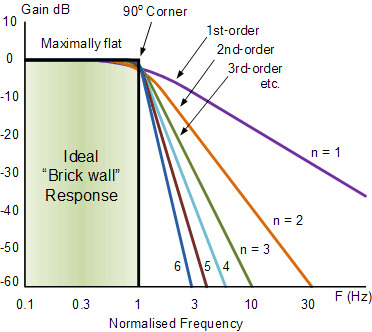
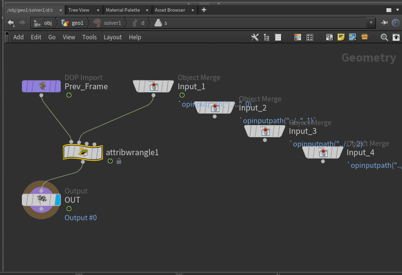
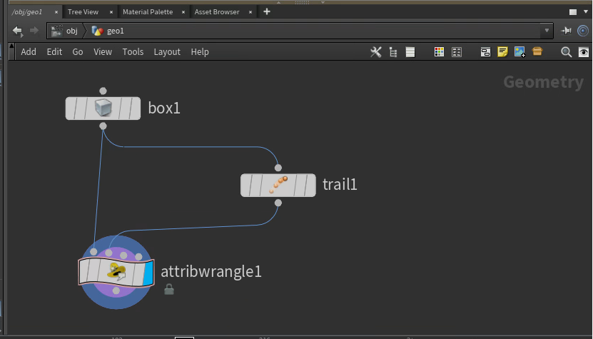

This was inspired by a talk Catherine Williams did at SydHUG. She looked into a bunch of equations to smooth data, then used them to smooth jittery cloth sims over time.
Smoothing and sharpening is a pretty cool topic I've dipped into into a few times, so I wanted to gather some popular methods and dump them into Houdini in case it helps someone. If you're Catherine you can probably skip 90% of this, but hopefully it's fun anyway!
For some reason Houdini doesn't really have built-in nodes for time smoothing. Unreal Engine, Blender and Maya have plenty of ways, like Butterworth and Chebyshev filters. These are super popular for motion capture, which always comes in janky and needs tons of smoothing.
Since Houdini doesn't have much to work with, let's make it from scratch!
The easiest way to smooth stuff is with lerp, which I wrote about here. It's really popular for games, especially in Unity. It's not a good method, but it's a nice intro to the topic.
The idea is you start at some value, then pick a target value. Each frame you move a little bit closer to the target by some percentage. The slower you move, the smoother your path becomes.
current = lerp(current, target, factor);Here's a demo with the smooth version in white. Click and drag to draw your own data.
There's 3 big problems with this method, which all smoothing methods suffer from.
If you set the slider really low, it looks like the graph moves to the right. This is called phase shift.
It happens since the value is too lazy in moving to the target, so it sticks near the previous value and smears out the graph.
Phase shift is a popular topic in music, you'll find many audio engineers rambling about it online (Dan Worrall is my favourite). When you use an equalizer on music (for example to boost the bass), it usually adds a bit of phase shift. Some plugins (like Plugindoctor) even show you the exact phase shift you'll get. This is called the phase response.
Phase shift is a natural part of the universe so there's nothing wrong with it, but it's annoying if you want stuff to line up. The lazy way is shifting over the graph. The proper way is using linear phase filters. Linear phase filters always need values forwards in time as well as backwards.
Apparently if you smooth forwards then again in reverse, it cancels out the phase shift and makes a linear phase filter. Here's a demo with the linear version in green.
You'll find this method is hard to control. It tends to smooth everything too much or not enough.
This is because of the order of the filter. The order basically means how sharp and precise a filter is. Here's a nice diagram from Electronics Tutorials. You can see as the order increases the curve gets steeper, meaning it cuts precisely and doesn't smudge everything.
The lerp method is basically a first order lowpass, meaning it's pretty blunt and smudges everything out.
Turns out there's a cool trick to improve it. If you run a crappy order filter a bunch of times in series, you approximate a high order filter. This works surprisingly well, though it's slower than using a high order filter directly.
Here's a demo with the original filter in red, and the layered filters coloured towards purple. Try drawing some data and watch it move!
When the slider is below 1, it never actually reaches the target.
You can tell from the formula. Lerp takes a percentage of two values and adds them together as described here. For example if the factor is 0.9, it takes 10% of the current value and adds on 90% of the target value. That means you never get 100% of the target.
Here's a demo where the white line targets the red line. Though it may appear to, it always lies below the red line until the factor is 1.
After writing this I realise undershooting isn't a huge issue, but I'll keep this section anyway.
To use this method in Houdini, we need a way to access the previous frame. Luckily there's many ways to do this.
I prefer using a Solver since it's the most robust. It runs in sequence so it's guaranteed not to skip any frames, so if you had a huge jolt it continues smoothing out the impact 1000 frames later. Audio plugins also run in sequence, so we can steal their code and be sure the result is the same. This comes in handy later!
First add a Solver node, then a Point Wrangle inside. Plug the the current animation (Input_1) into the second wrangle input.
Now we can write our formula in VEX. In solvers, @P is the current position. The second input @opinput1_P is the latest animation, which is our target position.
v@P = lerp(v@P, v@opinput1_P, chf("factor"));TODO: ADD DEMO VIDEO AND FILE
To get less smudgy results, you'd need to chain a bunch of solvers in a row. I don't recommend this.
Instead of sampling all past frames, it's faster to sample a handful of past frames and try to guess the future from them. This is called a sliding window technique, which Catherine used for her demo. It's good for production since it can be batch processed and run in parallel. I used it to make a GPU equalizer. However it's inaccurate for lerp-based smoothing, since it ignores jolts if it has no idea they happened.
To try it, add a Trail node and a Point Wrangle. Plug the trail into the second wrangle input.
Now we need to extract positions from different frames. This is done using point(). It has 3 arguments, but we only care about the last one.
vector pos = point(0, "P", point_number);Given the current point number @ptnum, we need to find the matching point number on the previous frame. Assuming the topology stays the same, you'll find a pattern. Let's say your @ptnum is 0. If the mesh has 5 points, your @ptnum on the previous frame will be 5, 10, 15, 20 and so on. This happens since the Trail node merges batches of 5 points per frame.
Using npoints(0) to get the number of points in the mesh, the general formula is @ptnum + npoints(0) * frame
Using this idea we can lerp through the positions from past to present, just like with the solver. No dictionaries or maps required!
int point_count = npoints(0);
// Make sure this matches your trail node
int trail_length = 128;
// Start at the last frame's position, the oldest frame
v@P = point(1, "P", i@ptnum + point_count * (trail_length - 1));
// Lerp from the past to the present, like what the solver does except manually
for (int frame = 1; frame < trail_length; ++frame) {
// Get the corresponding point position on the next frame
vector target_pos = point(1, "P", i@ptnum + point_count * (trail_length - 1 - frame));
// The magic formula
v@P = lerp(v@P, target_pos, chf("factor"));
}TODO: ADD DEMO AND FILE
Though it reduces jitter overall, it's much shakier than the solver and not a good use case for the trail approach. Let's try a fancier method.
Convolution solves many problems we were having before. It doesn't have as much phase shift and only needs a handful of frames, making it perfect for batch processing.
Convolution is when you sample a couple of neighbouring values, multiply them by weights and add them together. It's a weighted sum just like lerp, but it's much more powerful than you'd expect. It works for smoothing, sharpening, embossing and all kinds of cool filters.
Let's start with an example. Say you have two values, x and z. To find the average, you'd add 50% of x to 50% of z.
x * 0.5 + z * 0.5You can think of this as smoothing two neighbouring values together to find a new middle value.
Let's say the original middle value was y, so we have 3 values [x, y, z]. Let's include y in the equation as well.
x * 0.5 + y * 0 + z * 0.5In other words, ignore y and average x and z together. This is an example of a convolution on y with a size 3 kernel. The kernel is [0.5, 0, 0.5].
We can get all kinds of results just by multiplying 3 values together.
TODO: ADD DEMO
TODO: biquad filters